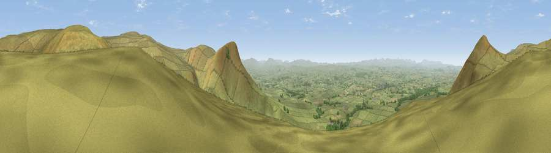

Viewpoint near Murton
#5480 in England · top 13% of its area beats it · near MurtonThe view, rendered

A 360° render of this exact spot computed from the terrain model, tree cover and land cover — summer colours, afternoon light, calibrated against photographs of famous viewpoints. Real trees, hedges and buildings will differ in detail.
The panorama
Grey silhouette: terrain skyline in each direction (720 bearings, Earth curvature and refraction included). Dashed green: skyline with trees (+15 m) and buildings (+8 m) as obstacles. Blue strip: how far the ground is visible on each bearing.
Where the view opens
Wedge length = distance to the farthest visible ground on that bearing (vegetation-aware). Rings at 10, 25 and 50 km.
What fills the view
95% grassland · 3% woodland · 2% cropland
Angular shares of the visible panorama (visual magnitude), not map area. Landscape diversity 0.11 (0–1 Shannon).
Key numbers
More beautiful places nearby
The staircase of upgrades: each row has a higher view potential than everything closer. Driving times are estimates from straight-line distance, calibrated against real road routing — check an actual route before setting out.
| Place | Direction | Drive | Score |
|---|---|---|---|
| Murton Pike | NW · 1 km | ~4 min | 75.0 |
| Viewpoint near Hilton | SSE · 2 km | ~5 min | 75.2 |
| Viewpoint c10485_7606 | ENE · 6 km | ~13 min | 75.6 |
| Mickle Fell | ENE · 7 km | ~14 min | 75.8 |
| Great Dun Fell | NNW · 11 km | ~21 min | 77.8 |
| Little Dun Fell | NNW · 12 km | ~22 min | 78.4 |
| Cross Fell | NNW · 14 km | ~25 min | 78.7 |
| Fell Head | SSW · 26 km | ~41 min | 78.8 |
54.59276, -2.39712 · source: screening · position refined by local search. Computed location — check access rights before visiting.